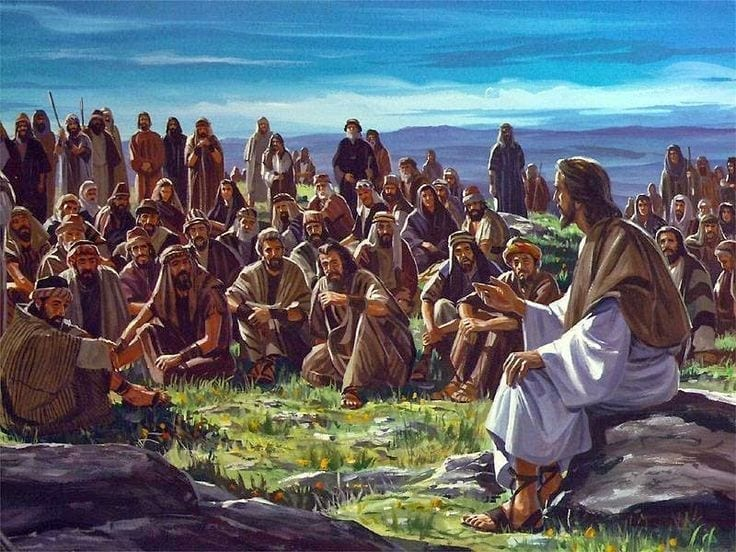

Abaout Jesus
Jesus is God revealed to humanity in form of a body like everyother human being. He came on earth about 2023 years ago. Born from a virgin woman called Mary. One major thing to not about His birth is that it was super natural. And the other is that it was a very humble birth compared to the title of Jesus
There are many best qualities that Jesus has, but prior to His coming on Earth prophet Issaiah mentioned His Characteristics as follows
- Governance authority on His shoulder
- Wonderful
- Counsellor
- The mighty God
- The exerlasting Father
- The Prince of Peace
Jesus had 12 disciples while on earth, People whom He chose for His own good reason to complete His mission of redeeming Humanity. Among the 12 the most closest disciples were three. To learn more about them click on the link below;